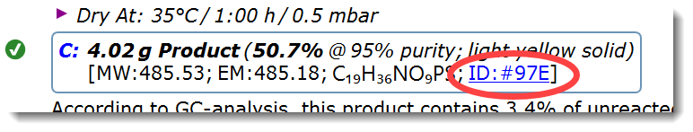
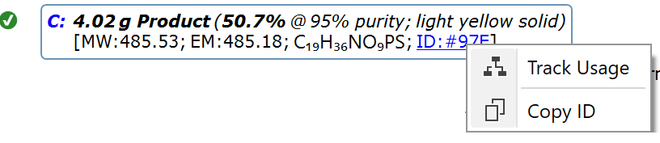
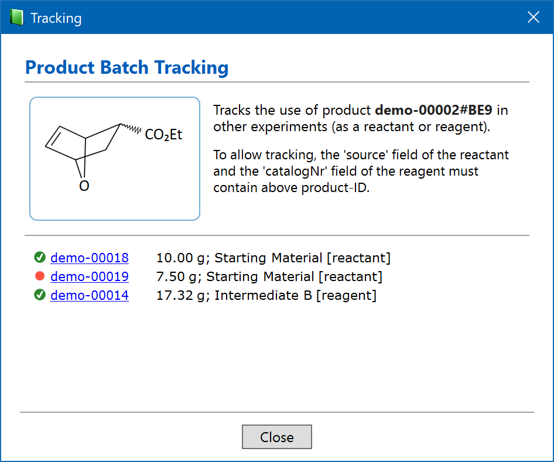
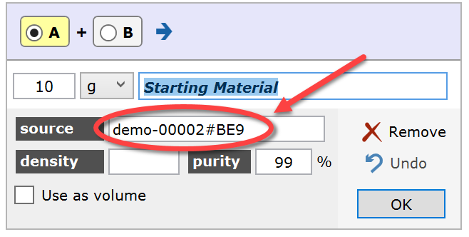
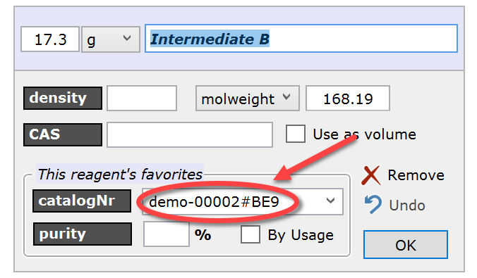

Product Tracking
Introduction
A product batch of an experiment can serve as the starting material of the next step, of a different synthesis, or as a reagent of another synthetic branch in a convergent synthesis. Since product batches may vary in quality, it is important to track which experiment utilized which product batch as the source material, since this might have influenced its outcome.
|
Product Batch: Sometimes a specific product is produced in multiple experiment runs, or is isolated as multiple crystallization or distillation fractions within an experiment, each of them having a different impurity profile. Such product portions of varying quality are referred to as product batches. |
Espresso ELN considers each product entry in the protocol as a product batch, and allows tracking by assigning it a unique Product ID, which can be referenced in the consuming experiment.
Product ID
From Espresso ELN version 10 on, each product entry in the experiment protocol contains a unique Product ID, consisting of the experimentID and a unique identifier in the format of e.g. "bubblerm-00321#97E". A shorthand notation of this ID is displayed as a blue link in each product entry. Important: Only the complete product ID (i.e. including the experimentID) is guaranteed to be a unique product identifier across all users.

The complete product ID is easily accessible by clicking the product ID link and selecting the Copy ID item, which copies it to the clipboard for further use.

Product Tracking
Clicking the Track Usage item of above context menu opens the product tracking dialog. When connected to the ELN server, the resulting result list contains finalized experiments of all users, in addition to finalized and unfinalized experiments of the current user. Finalized experiments are marked by a green checkmark, unfinalized ones by a red dot. Clicking an experiment link opens the corresponding experiment in the background.

Product tracking is established by entering the full Product ID into the 'source' field of the consuming reactant, or into the 'catalogNr' field of the consuming reagent. If connected to the ELN server, also references to products of other users are valid. When the Product ID is recognized, the purity of the corresponding source product is inserted, if specified. In case of a reagent, additionally the molecular weight of the source product is inserted.
 
Entering a product ID shortcut only, e.g. '#BE9' only will result in no hits, and experiments must be saved and/or synchronized to the server before they can be found by product tracking.